Todo lo que el juego dibuja o sintetiza por código, exportado para pintarle encima o reemplazarlo.
Cada imagen está en su tamaño real (original) y ampliada 8× pixel por pixel (x8), que es la cómoda para editar.
Debajo de cada una dice qué función la genera. Para reemplazar un asset en el juego hay que conectarlo en el script correspondiente
(los sonidos ya se pueden reemplazar desde el componente SoundFX).
Referencia de cómo se ve cada nivel en el teléfono. Los sets del elevador y los drones están hechos con rectángulos en código (StageBuilder): son los mejores candidatos para arte nuevo.
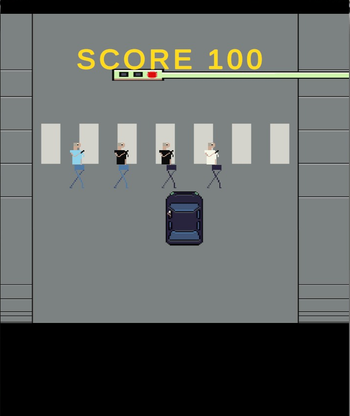
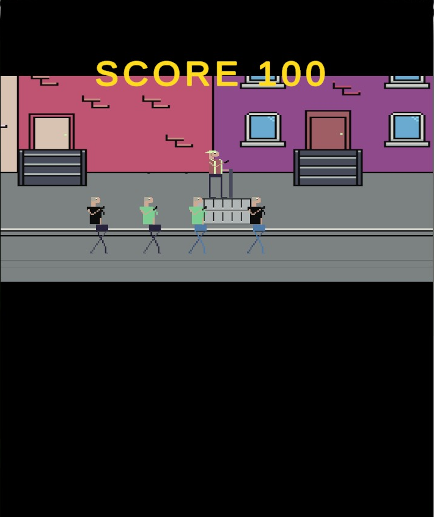
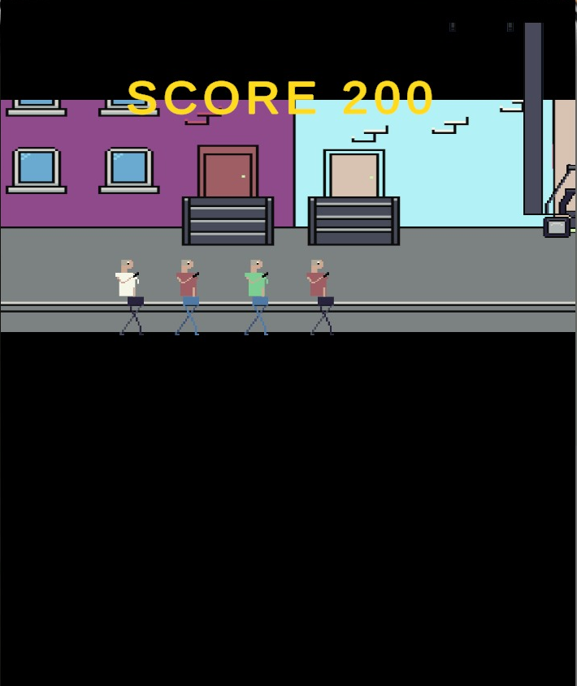
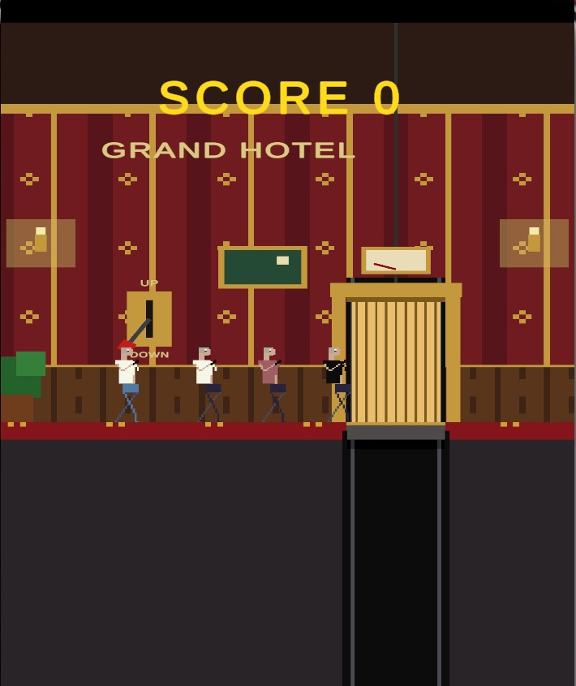
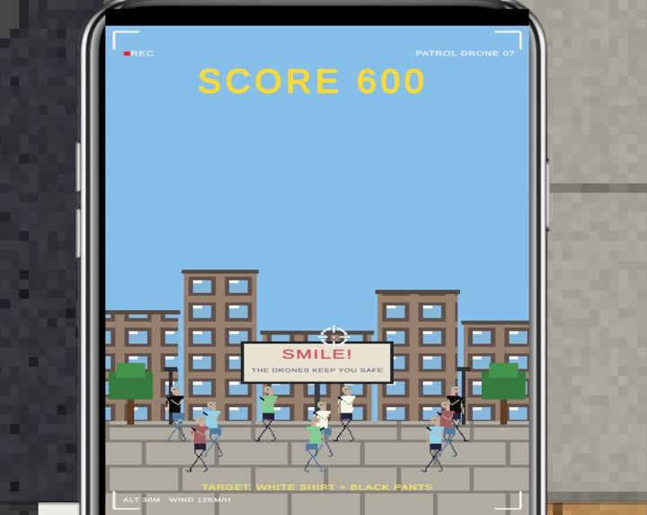
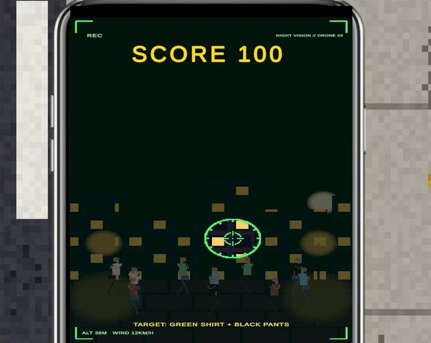
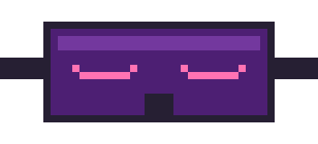
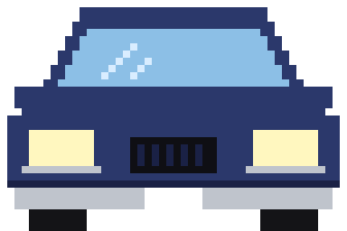
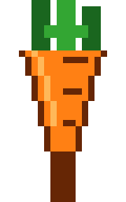
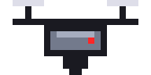
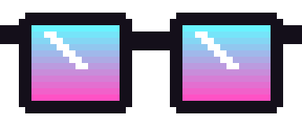
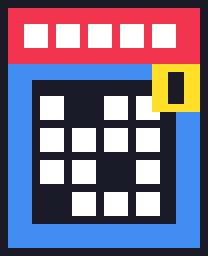
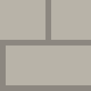
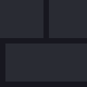
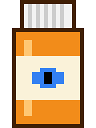
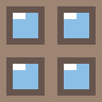
128×128, se repiten verticalmente mientras caminas.
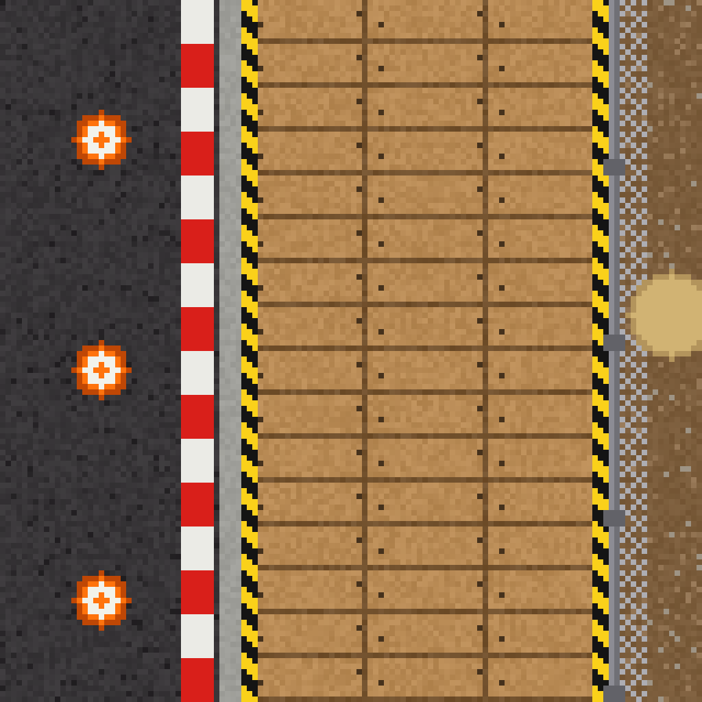
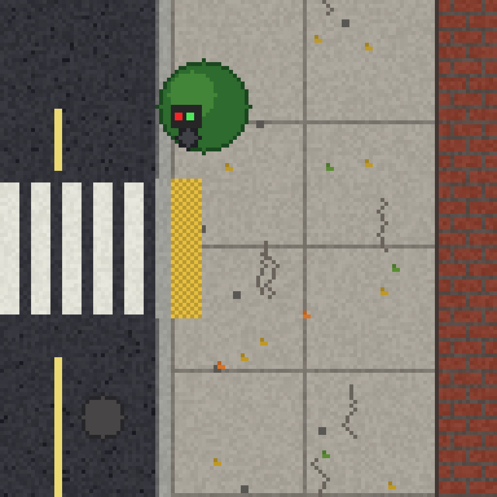
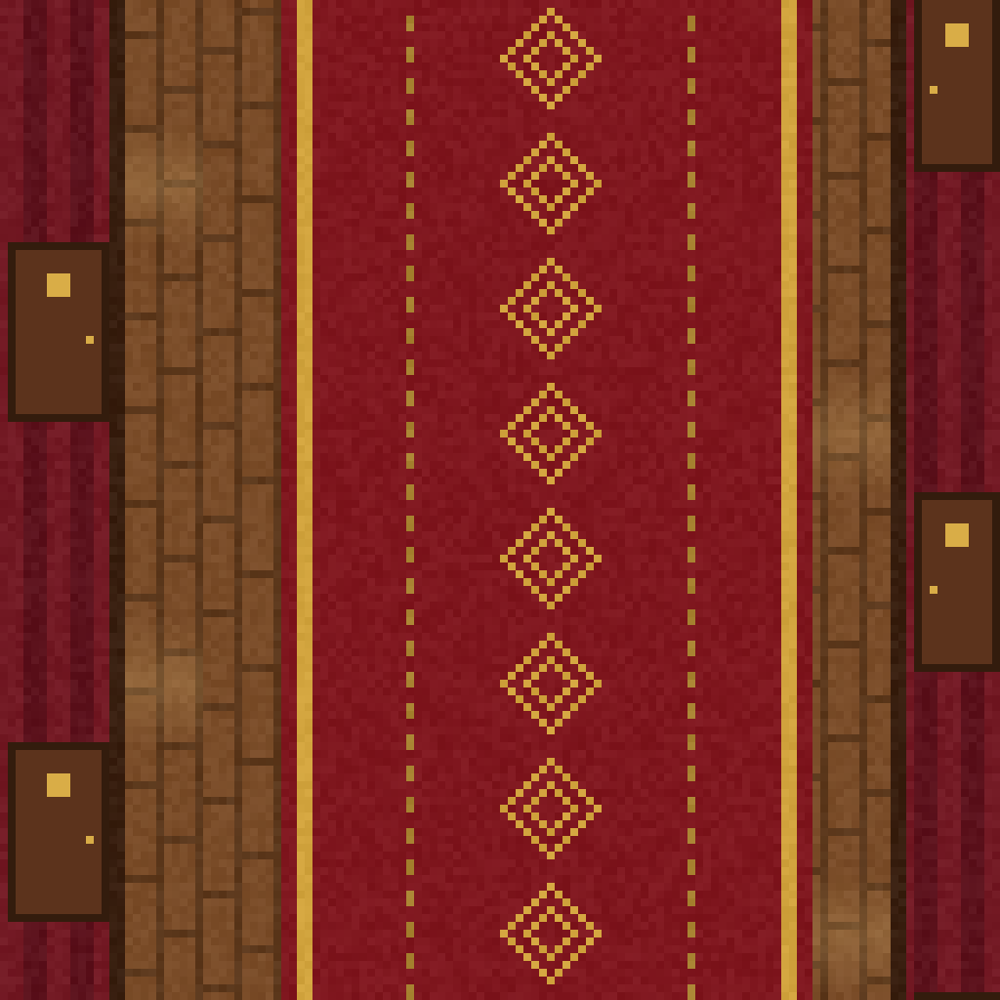
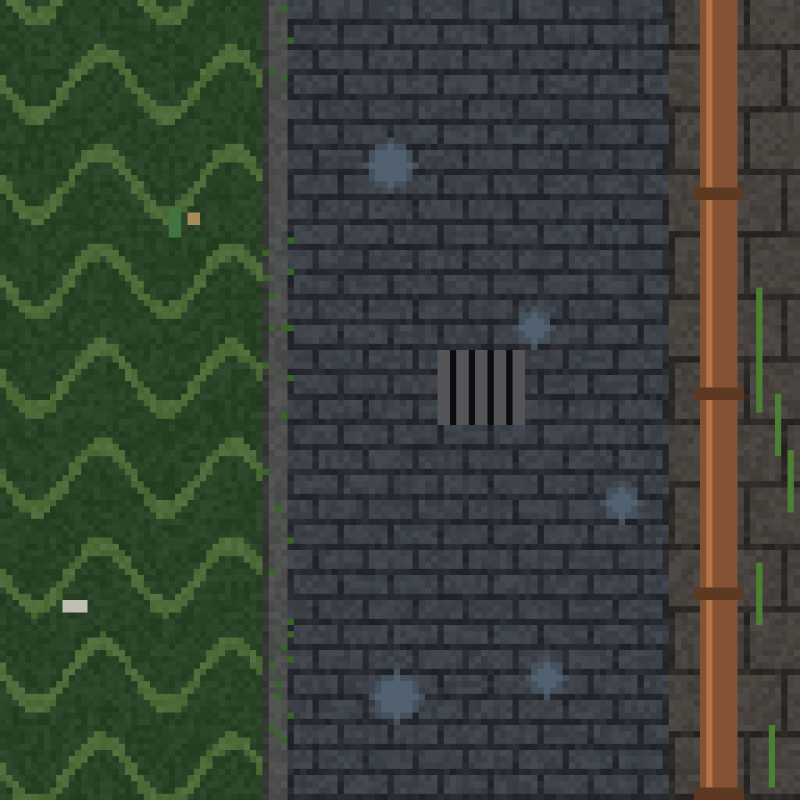
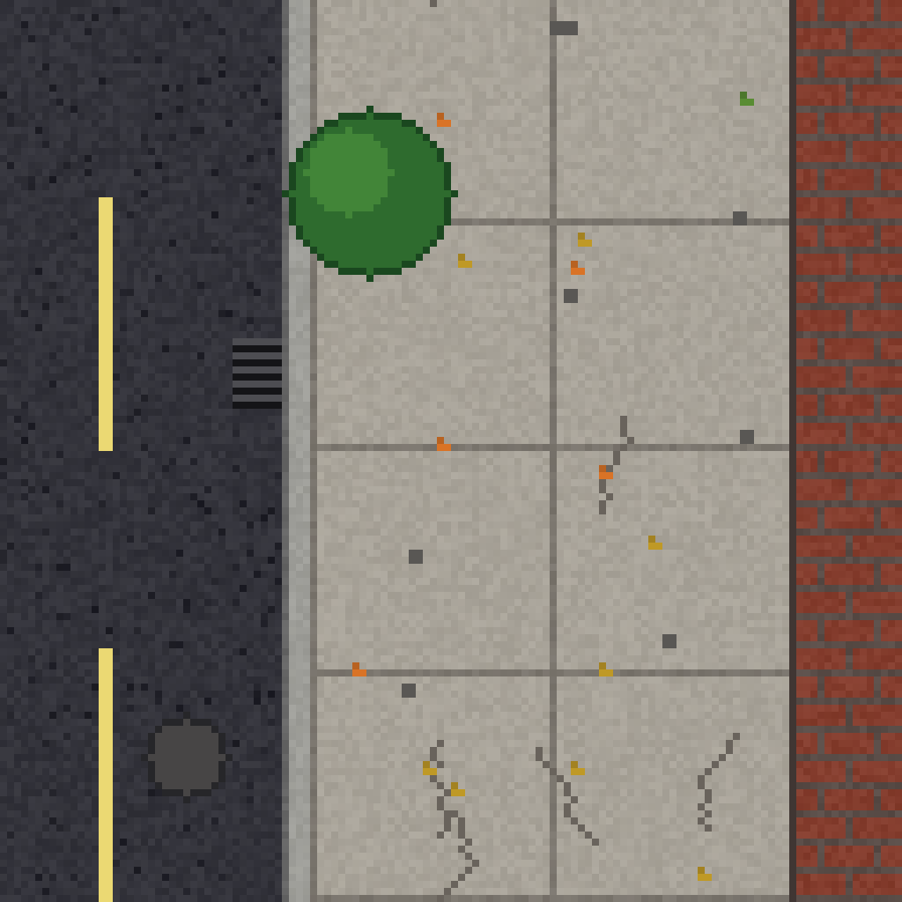
Sintetizados con el algoritmo de sfxr/bfxr (RuntimeSounds.cs). Se pueden reemplazar con .wav de bfxr.net.